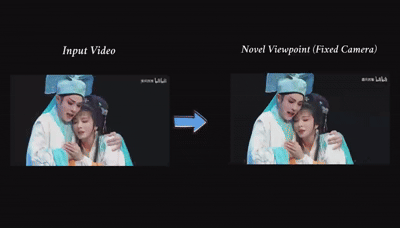

Stage Unbound: Immersive View Synthesis for Performing Arts from Monocular Videos
Author Name

In this work, we propose StageVerse, a novel method that transforms monocular performance arts videos into immersive 4D experiences. Our method enables novel viewpoint synthesis for both fixed-viewpoint and dynamic novelviewpoint with temporal consistency, allowing audiences to explore performances from any angle—unlocking new possibilities for cultural preservation, interactive storytelling, and immersive media.
Abstract
Stage performances are a cornerstone of human storytelling, traditionally constrained to fixed viewpoints and limited visual perspectives. In this work, we reimagine these experiences through StageVerse—a novel method for transforming single-view stage performance videos into immersive, navigable 4D scenes. By leveraging a specially adapted large-scale video generation model, StageVerse enables free-viewpoint rendering, allowing audiences to virtually explore performances from any angle, across time, and even within AR/VR environments. Unlike conventional 4D reconstruction methods that rely on multi-view studio captures, our approach operates on casual monocular videos, and we overcome challenges such as occlusion and missing geometry. Through a carefully designed two-stage pipeline—where view transformation is decoupled from content generation and conditioned on lifted dynamic point clouds, while a separate network focuses on upscaling and content refinement—StageVerse delivers high-fidelity, expressive reconstructions, even in challenging multi-human performance scenarios. To enhance viewer immersion, we also introduce two innovative targeted facial modeling strategies: a zoom-in re-composition strategy for preserving facial geometry, and a face-aware video refinement network to boost appearance quality and maintain temporal coherence. Our results demonstrate a significant step toward democratizing 4D performance video synthesis and opening new possibilities for cultural preservation, interactive storytelling, and immersive media creation.
Method
The Architecture of StageVerse. a) We use a face detector to process the input video and extract facial regions for
targeted handling. b) The first stage employs a controllable video diffusion model for new viewpoint synthesis, with camera
poses injected via point cloud rendering based on depth information from the original video. Facial regions are processed
separately and re-integrated to maintain geometric quality. c) Our facial content refinement mechanism further optimizes the
faces, ensuring high appearance quality. The final output is a new perspective rendering based on user-specified camera poses,
whether fixed or variable.
3D Scene Generation
Results
Novel View Synthesis. Our Method can generate videos at different viewpoints (first three columns) and switch viewpoints for a single video (last three columns). In the first row, green marker is the GT viewpoint. Blue marker is the inputted novel viewpoint.Our Facial Content Enhancement can produce higher-quality face compared to generic image super-resolution method Real-ESRGAN.
More Results
Enhanced Depth Contrast by Zooming-InComparison of Temporal Flicker. We compare our facial content refinement with the popular image superresolution model Real-ESRGAN. Each column of frames (red lines) shows the changes over time. Real-ESRGAN exhibits noticeable temporal discontinuities around the eyes. In contrast, our approach effectively maintains stable facial priors and aggregates temporal information, significantly reducing temporal jitters and enhancing coherent local details.Applying Zoom-In Re-Composition significantly improves facial distortion.